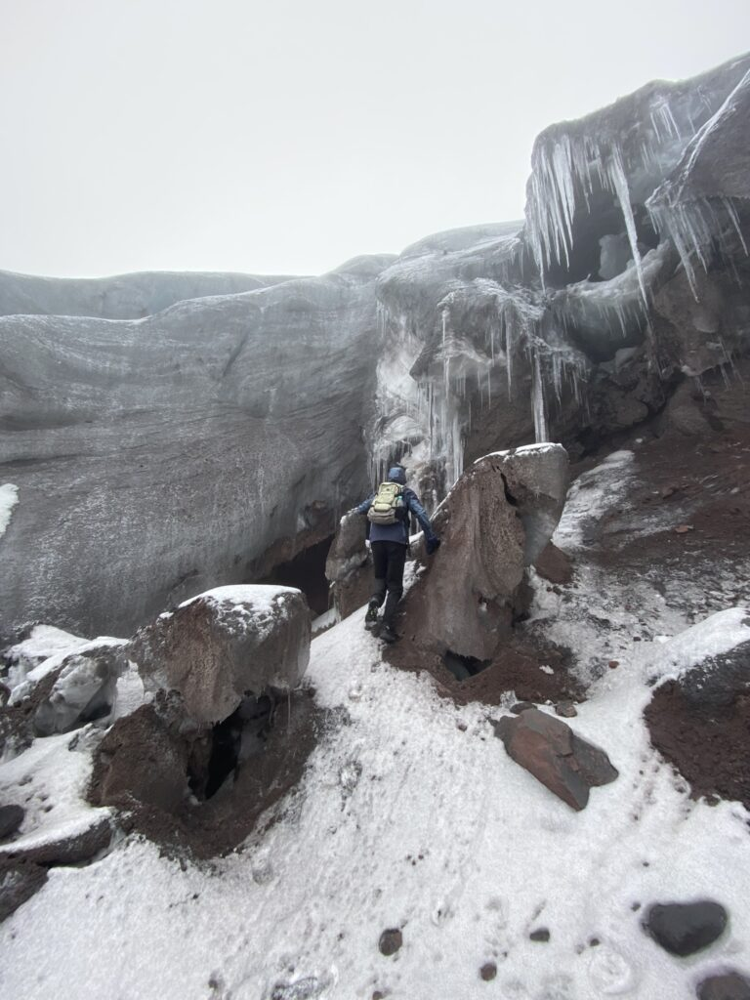
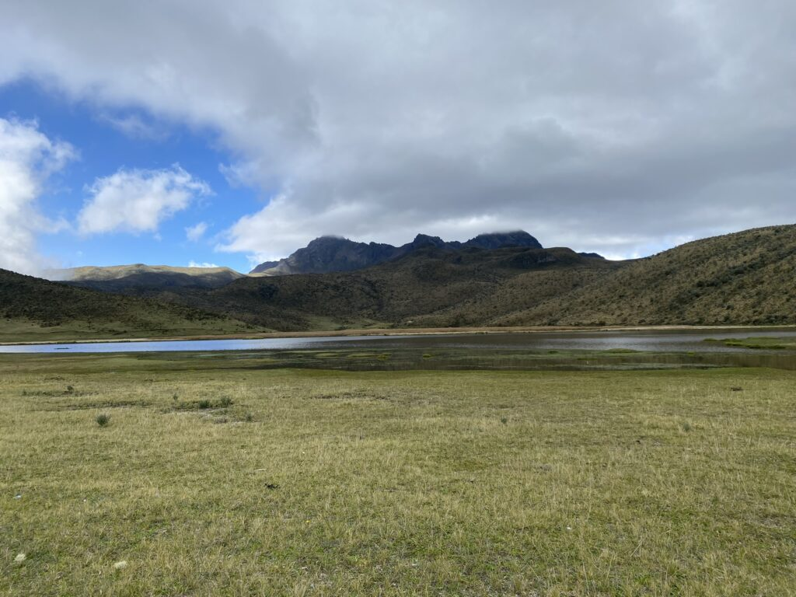
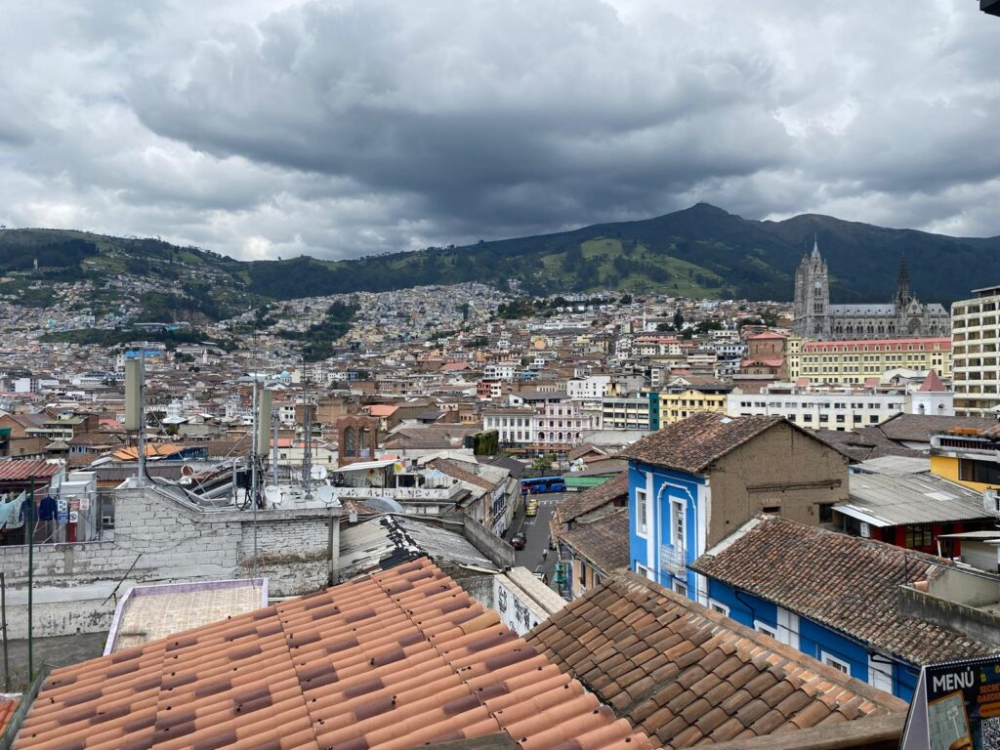
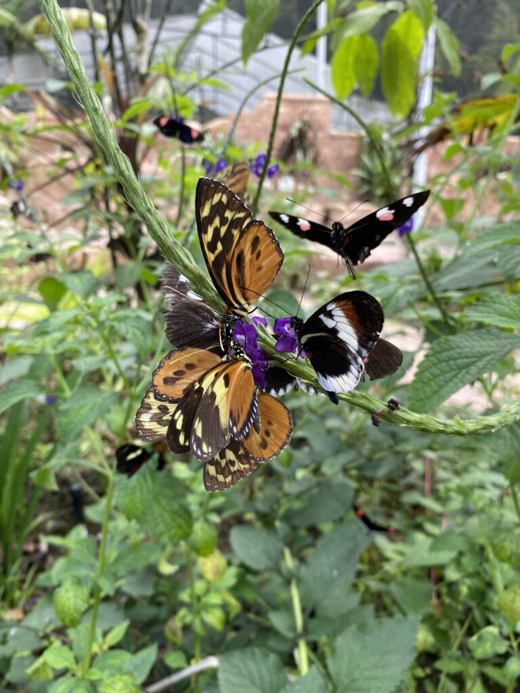
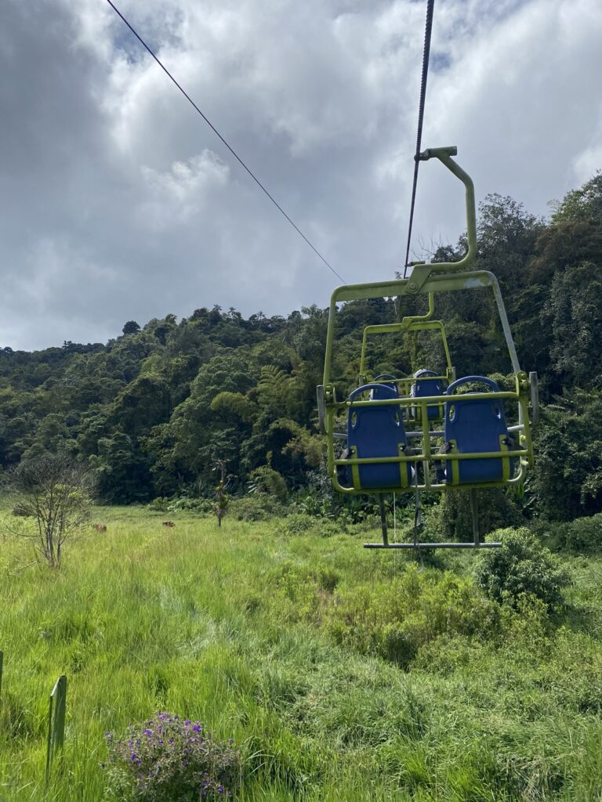
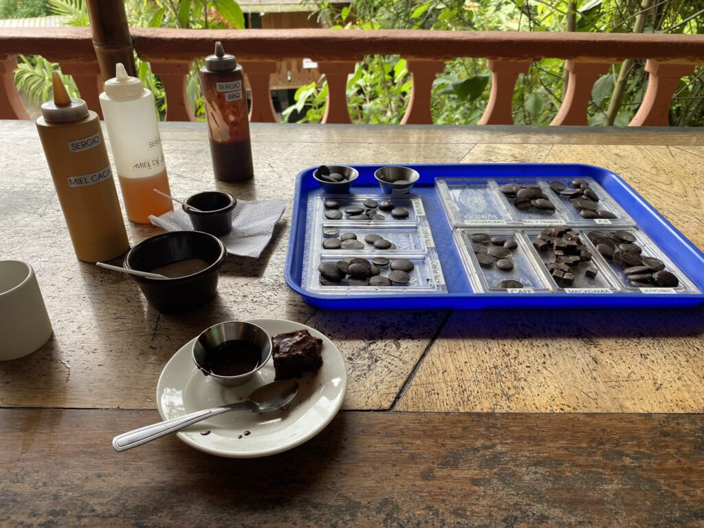
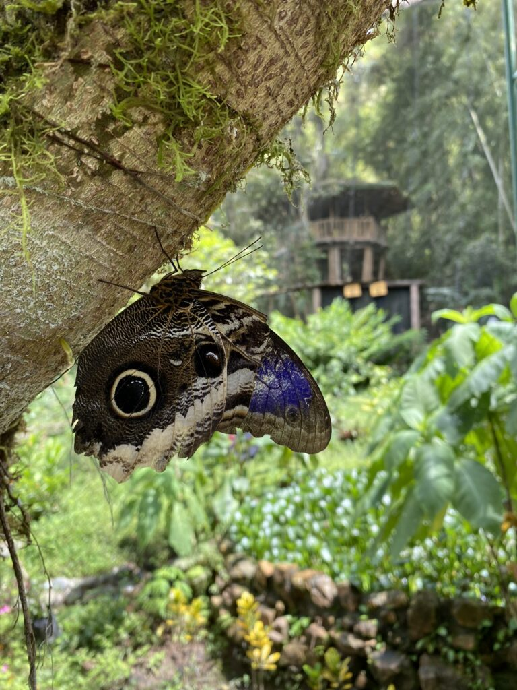

De mist van Quilotoa achter me latend, vervolg ik de weg naar de volgende vulkaan die beklommen, beteugeld en afgevinkt moet worden. Hét magische hostel waar iedereen het over heeft is al dagen van tevoren volgeboekt, dus trek ik naar een alternatief dorpje in de buurt van de machtige Cotopaxi. De bus rijdt op de snelweg, waarop vrouwen in dierlijke onesies druk met vlaggetjes naar wegrestaurants zwaaien. Als ik uitstap zie ik gelijk het magistrale uitzicht op de nog actieve krater. Ik sta in 22 graden felle zon (bijna op de evenaar), maar de top is besneeuwd. In het hostel en omgeving is absoluut geen hond, op een grote herder en witte pluizenbol na, die de hele dag in de tuin tegen elkaar aanslapen.
De veel te lieve hostes doet alles om me het hof te maken, zegt op alles ‘Thank you so much Tormenta’, opgevolgd door een onverstaanbare brij Engels.
De heer Segundo, de eeuwige nummer twee, rijdt me de volgende dag door het nationale park; een hobbit-achtig landschap met wilde paarden, pijnboomvelden en een glinsterende laguna. Eerst vrees ik dat de wolken weer damp in het eten gooien, maar hoe hoger hoe helderder. Als we aankomen bij het beginpunt is het niet meer dan een paar graden. Een straffe wind beukt door alle kieren heen. Segundo wijst me een pad en gooit me een paar wanten toe: lopen. Hij gaat blijkbaar niet mee. Het zanderige pad loopt al snel over in sneeuw tot kniehoogte, dus ik loop op de gok naar boven, onwetend waar het eindpunt is. De barre tocht wordt gekenmerkt door steile hellingen en doordringende kou. Na een tijdje bereik ik een groepje lotgenoten die wel een betrouwbare gids hebben ingehuurd. Hier zijn de gletsjers met meterslange ijspegels onbegaanbaar. Iedereen geeft elkaar een boks omdat ze de finish hebben bereikt. Ik krijg er ook een paar. Daarna vlieg ik naar beneden. Onderweg kom ik de vreemdste types tegen. Een opgewekte kerel wurmt zich in een korte broek door de sneeuw. Vlak achter hem lopen twee chagerijnige jongeren met een hardcore uitstotende boombox in hun rugtas. Het contrast met de ruige natuur kan niet groter zijn.


Heel veel bonen
Na al het natuurgeweld is het eindelijk tijd voor Quito, de politieke en culturele hoofstad van Ecuador. Ik loop veel door het door Unesco bestempelde koloniale centrum. Naast de vele kerken van vulkaansteen en met botten gebouwde huizen (dat brengt geluk) is er ook veel kunst. In Quito kregen ze het voor elkaar om onder de Spaanse bezetters hun kunstzinnige uitspattingen voort te zetten en die te mengen met de Europese school, waardoor inheemsen hun geschiedenis op het doek kwijt konden.
Zwiterserland en België pronken altijd met hun chocola, maar alleen in Ecuador groeien de cacaobonen op natuurlijke wijze en daar zijn ze trots op. De 85%-variant die hier wordt gemaakt is wél te hachelen, verrukkelijk zelfs, omdat de boon alle frisse en fruitige smaken uit de amazone in zich opneemt. Ik proef repen met gember, gekaramaliseerde sinaasappelschil, cacaonibs, koffiebonen en mijn persoonlijke favoriet: zeezout met chilipeper. Het zout werkt achter in je keel nogmaals waardoor je de smaak als het ware tweemaal ervaart.
Onder de knallende zon lopen mensen rond met pannetjes vol wierrook, dat de geur op straat domineert, tegen de boze geesten en de muggen. Ik loop een verlaten straat in en krijg gelijk vijf prostituees aan m’n nek. ‘Chicooo, ven conmigooo’. Ze omsingelen me, laten me niet los en lopen mee tot in de apotheek waar ik moet zijn. Pas in de drukte kan ik de open plastic borsten van me afslaan.
Het zijn zalige dagen gevuld met empañadas, gekuier door het centrum, salsa en drank op het dakterras van het hostel waar elke jonge ziel haar heil zoekt.

Bestemming bereikt
De weg naar het schijnbaar utopische dorpje Mindo in de subtropen is zoals gebruikelijk slingerend. Bij aankomst is het lunchtijd en word ik uitgenodigd door een groep westerlingen om aan te schuiven, naast het valse gitaargeblèr van een Colombiaan. De zestigplussers hebben Amerika, Engeland of Duitsland voorgoed achter zich gelaten en vormen een berjaardenclub in het ‘paradijs’. Het authentieke, half ontwikkelde dorpje in de subtropen is ,toegegeven, charmant, maar heeft alles in zich om over tien jaar een nieuw toeristisch centrum van outdoor adventure te zijn.
Ik loop rond in vogel- en vlindertuinen en kan het niet laten om wederom een choco-tour te doen. Ik volg het droog-, fermentatie-, pers-, maal- en mengproces in het lokale fabriekje om me vervolgens misselijk te eten aan alle cacao-combinaties, inclusief bbq-saus. Het hoogtepunt van de broeierige jungle-omgeving is een hike langs een enorm aantal watervallen. Om daar te komen neem ik een skilift en cabinerit, die een Tarzanachtig uitzicht faciliteren. Het ijskoude water smaakt als schepijs na de honderden meters stijgen en dalen. Ik blijf nog een paar dagen hangen in het oord waar geen zorgen zijn en het afgelegen hostel een vrijplaats is van unieke verhalen en nog meer dolende zielen. Kosmopolieten die nooit meer naar huis gaan, omdat ze daar al zijn.



